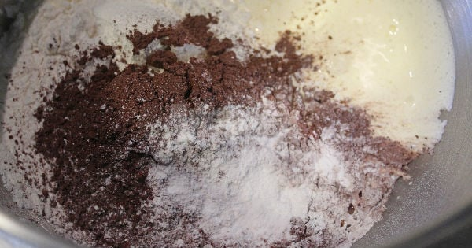
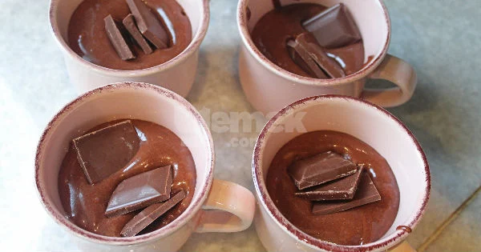
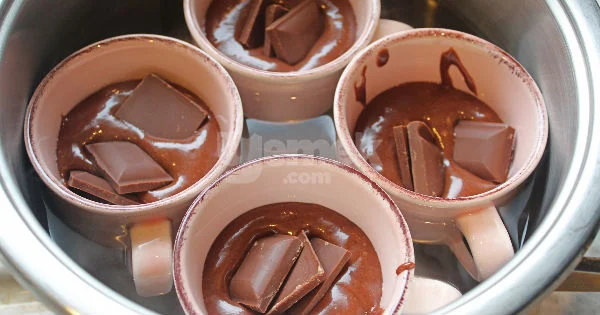

Geniş tabanlı bir tencereye yaklaşık olarak 3 parmak yüksekliğinde su koyup ocağa alın ve kaynamaya bırakın.
Yumurta ve toz şekeri köpürene kadar çırpın.
Ardından yağ, süt, un, kakao, vanilya ve kabartma tozunu da ekleyip tekrar karıştırın.

Hazırladığınız kek harcını fincanlara paylaştırın, fincanların yarısından biraz daha fazla dolmasına özen gösterin, ağzına kadar doldurmayın. Çikolatayı kırıp fincanlara paylaştırın.

Kaynamakta olan suya fincanları oturtun. Su fincanların yarısına kadar gelmelidir.
Tencerenin kapağını kapatın ve bu şekilde 10 dakika pişmeye bırakın.

Kabarıp piştiklerinde tencereden alın ve üstlerine pudra şekeri serptikten sonra sıcak olarak servis edin.